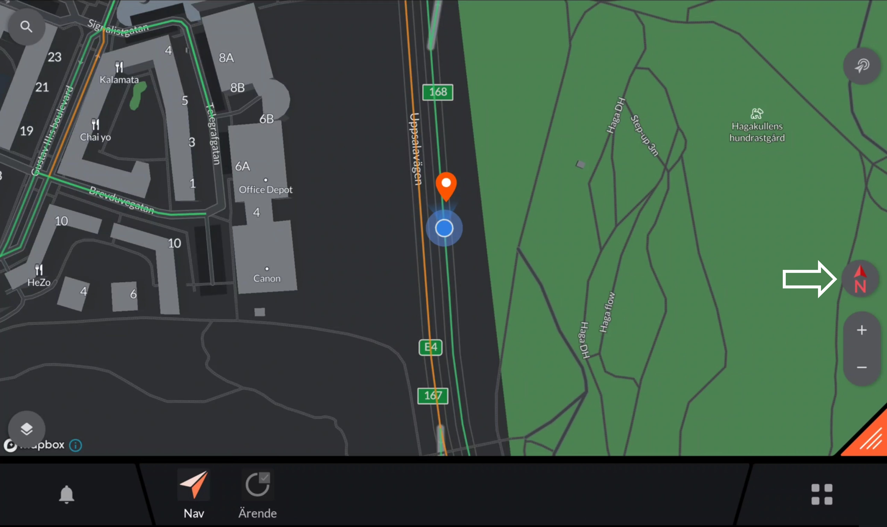
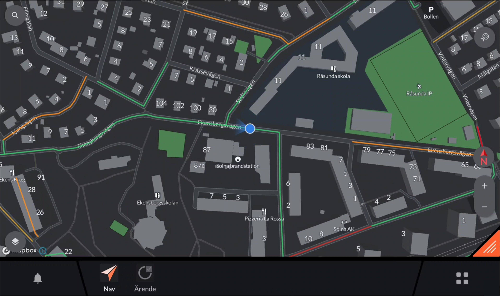
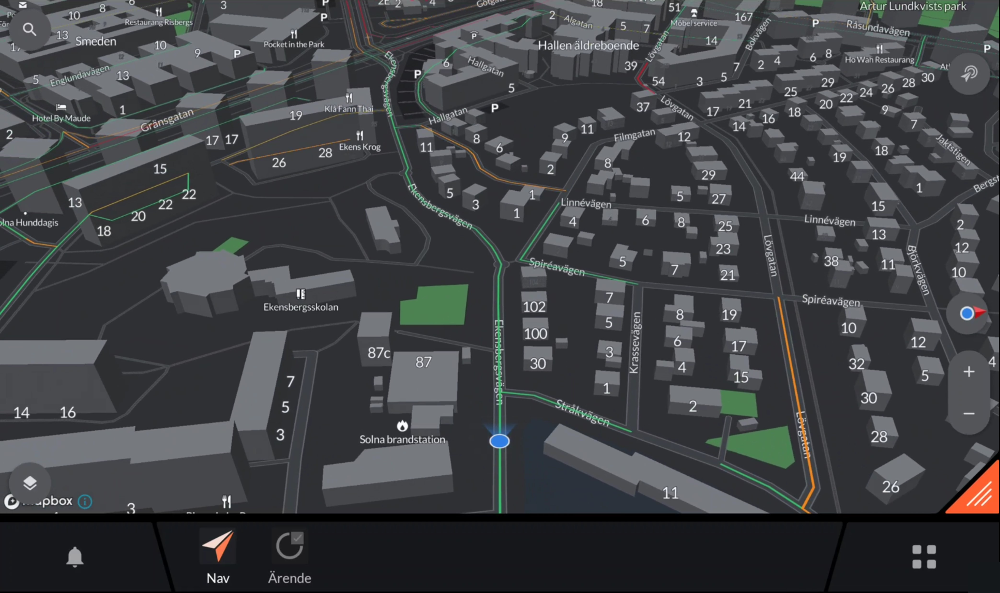
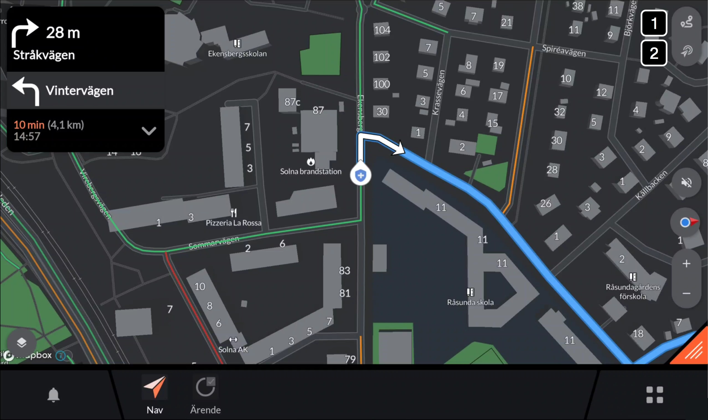
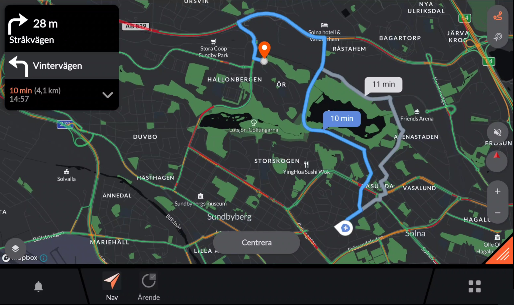
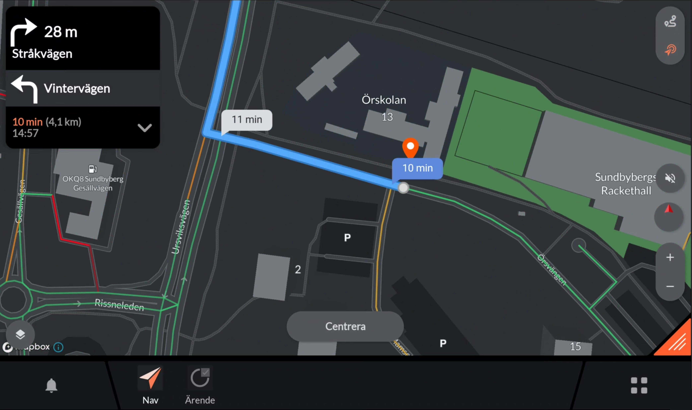

Application: Navigation¶
Developer: Evam
Availability: World-wide
Description: Navigation is central to driving. We designed the Navigation app from the ground up to get first responders swiftly and safely to the scene. With real-time maps and a user-friendly design, it shortens response times and improves traffic safety for first responders globally.
User instructions¶
The overall functionalities of the Navigation app are as follows:

Route card: The route card shows the next turn, second to next turn, Estimated Time of Arrival and distance to destination.
Route overview: Pressing the button zooms out the map to show the full route overview. Read more
Destination overview: Pressing the button brings you to a destination overview. Read more
Audio guidance: Turns on and off turn-by-tuen audio guidance.
Map-mode: Pressing the button toggles the map between following the car with the map oriented in North/South mode and the map oriented in the direction of travel. The red arrow in the icon always indicates North direction. Read more
Zoom: Zooms the map in and out without disconnecting the map from following the vehicle.
Base maps and layers: Opens a menu to select base maps and map layers to be displayed.
Center: The center button appears as soon as the map has been moved to no longer follow the vehicle. Pressing center will zoom the map back to following the vehicle.
Map Mode¶
To toggle the map between following the car with the map oriented in North/South mode and the map oriented in the direction of travel you may change the map mode. The map mode is changed by pressing the map mode button marked below: 
Toggling the map mode button will present you with with the following modes:
North Mode 
Direction of Travel Mode 
Route and Destination Overview¶
A route and destination overview can be activated simply within the Navigation app. The different functions are activated with the top right buttons when you have a active trip as described by the figure below.
Button 1: Route overview
Button 2: Destination overview

Route Overview

The route overview can be used to give and overview of the route to quickly understand where you are heading. If there are alternative routes these will be shown. However, the quickest route will always be pre-chosen. You may select the other route by pressing on it or starting to drive that route as the navigation app then automatically will adapt.
Pressing “Center” will bring you back to follow the car again.
Destination Overview

The destination overview may be used to quckly zoom in on the destination to give you an overview of the site you are heading to. Take the possibility to start planning your first actions before you are at site. When in the destination overview mode you may change to a different map layer e.g. satellite images to get an even better overview of the site.
Pressing “Center” will bring you back to follow the car again.
Adding a breakpoint or middle stop¶
Adding a breakpoint or middle stop can be made in two ways:
Option 1: Through the dispatch. The dispatch may include a breakpoint. This will be added as a middle stop in the navigation route and can be viewed and removed by expanding the route card.

Option 2: By expanding the route card and clicking “Add stop” which brings you to the address book where you also can search for other destinations outside of your address book.

Cancelling a navigation route¶
To cancel a navigation route, expand the route card and click “Cancel navigation”
FAQ¶
The navigation app suggested a route that was not optimal
The routing engine takes traffic into account and will route you on what is counted as the quickest route. Even though we work hard to always provide the most optimal route there may be cases where you believe that another route would have been better.
We are happy to adjust the routing engine based on your feedback. To provide feedback on a route please contact support@evam.life and include the following information:
Starting coordinate
Destination coordinate
Description of the route that was suggested by the navigation app
Description of the route that you believe would bet better
Time at which the non-optimal route was generated.
The map in the navigation app has an error
The maps are continuously updated, and we work hard providing you with the most accurate maps. If you encounter an error in any map material, we are happy to receive feedback so we can update the map material for you.
If you have encountered an error in the map please contact support@evam.life and provide the following information:
Name of faulty map e.g. “Nav”
Description of what is wrong
Description of how the map should look like
Depending on the affected map it may take up to 3 weeks for us to improve the map and make it available for you.
The positioning is not precise or is lagging behind
If the positioning is not precise or is lagging behind the cause may be one of the following:
Inaccurate sensors: The position is made with support from several sensors such as GPS, Accelerometer, Gyroscope and Magnetometer. One of the sensors may be inaccurate.
Disturbing equipment: There may be disturbing equipment placed close to the device. For example, devices utilizing USB 3.0 are well know for disturbing GPS signals.
Evam may help you identify and solve the problems through the advanced support logs. Please send the advanced support logs from the settings menu reached through the shortcut center and contact support@evam.life including the following information:
Vehicle username
Time at which the logs were sent
Description of the problem
Time at which the problem was observed.
What map layers and base maps can I get access to:
The navigation app can handle any map material in any of the following formats:
KML
KMZ
GeoJSON
Shapefile
MBtile
TAB
Other map formats can also be handled at an extra cost. Please contact support@evam.life
Evam is a developer of maps from Swedish Ordnance Survey (Sv. Lantmäteriet) and the Swedish Traffic Department and may process maps from them at your request. Please note that the end-user still must have necessary map licenses.
To request a new base map or map-layer please contact support@evam.life.
Configuration¶
The address book
Adresses may be added to the address book. The addresses may include any of the following data:
Name: The displayed name of the adress
Category name: The category which the address should exist under in the address book.
Sub category name: The sub category which the address should exist under in the address book.
Icon: Any icon from Material Icons library that should be displayed next to the address.
Coordinate: Destination Coordinate in WGS84 Decimal
Tetra actions: Any Tetra based actions e.g. sending a status, that should be done when selecting the status.
To add adresses to the adress book contact support@evam.life.
Base maps
The available base maps may be configured. Furthermore, automatic base map layers changes may be configured. Each base map can be configured to either active or deactivate based on the following events:
Operation complete
Operation confirmed
At site (Case address)
Exit site (Case address)
At breakpoint
Exit breakpoint
At home station
Exit home station
At Hospital
Exit hospital
Only one base map may be active at a time.
Map layers / Overlays
The available map layers / overlays may be configured. Furthermore, automatic map layers changes may be configured. Each map layer can be configured to either active or deactivate based on the following events:
Operation complete
Operation confirmed
At site (Case address)
Exit site (Case address)
At breakpoint
Exit breakpoint
At home station
Exit home station
At Hospital
Exit hospital
Multiple map layers / overlays may be active at the same time.
Offline area
An offline area may be configured to always have all maps available no matter if you are online or offline. As standard an offline area equal to 650 tiles and 30GB of data is included. That is equal to an offline area equal to the size of e.g., greater Stockholm at highest resolution.
Larger offline areas may be achieved through an extra cost/service or by lowering the resolution of the offline maps.